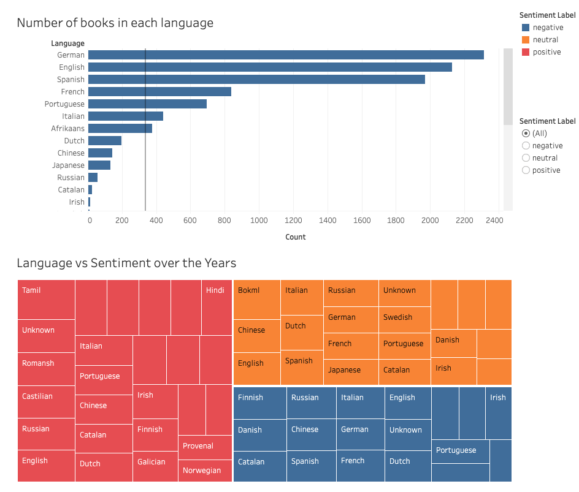

Project Overview: Data Analysis and Visualization
Introduction: The surge in e-commerce has transformed consumer interactions with products, emphasizing the pivotal role of online reviews. This shift is particularly evident in the book industry, where platforms like Amazon shape readers' decisions. The dataset chosen revolves around Amazon Kindle book reviews, offering insights into customer sentiments and preferences.
Dataset Overview: The dataset includes key fields such as reviewerID, ASIN, reviewerName, helpfulness metrics, review text, overall rating, and timestamps. Metadata provides additional details like category, description, title, brand, rank, and book details.
Purpose: This dataset aids in understanding customer sentiments in book reviews, exploring factors impacting literary work success. It allows for natural language processing for sentiment analysis, unveiling emotional tones expressed in reviews.
Approach: In the project's initial phases, Python handled data processing tasks such as loading, addressing missing values, and extracting key features. This ensured a robust dataset for further analysis. For sentiment analysis, Python, supported by spaCy and a Hugging Face model, accurately classified reviews. Transitioning to Tableau, the focus shifted to exploratory data analysis (EDA) and dynamic visualizations. The cleaned dataset seamlessly connected to Tableau, facilitating the design of comprehensive dashboards to visualize key insights and answer research questions effectively.
Sentiment Overview
Language Exploration
Temporal Analysis